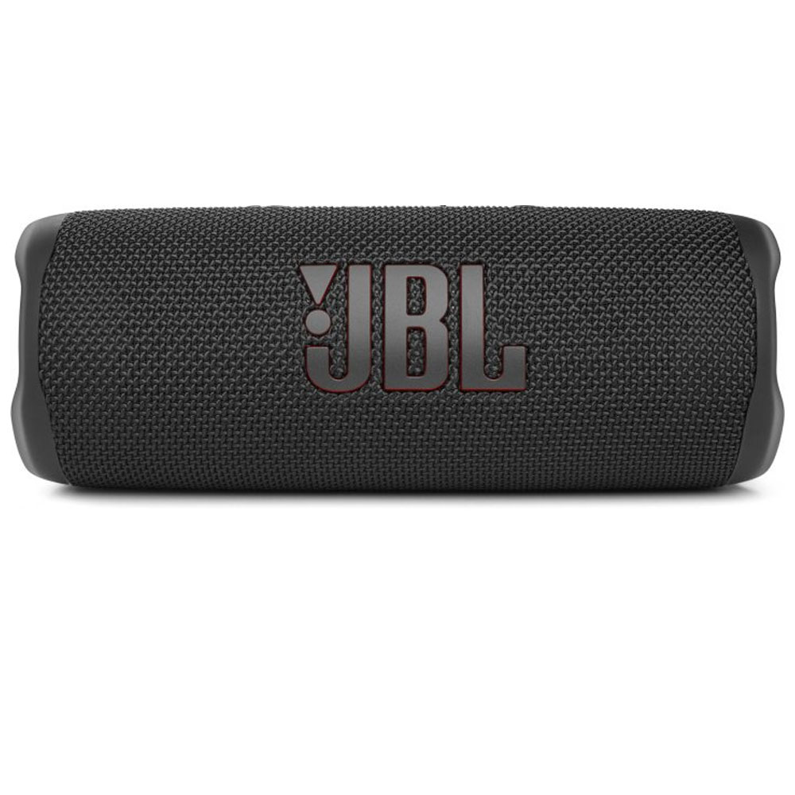

Магазин телефонів та аксесуарів"WILL.ka"
Портативна акустика JBL Flip 6 Black

Опис товару
Нова конфігурація аудіосистеми включає подвійні пасивні радіатори, потужний НЧ-динамік та окремий ВЧ-динамік. JBL Flip 6 передасть музику з кожною найдрібнішою деталлю - бас, середні та високі частоти. "Ми раді представити новітню портативну модель JBL Flip - Flip 6. Поряд з новим сміливим дизайном логотипу, JBL Flip 6 потужніший за своїх попередників і оснащена новітніми передовими звуковими технологіями JBL", - сказав Дейв Роджерс, президент HARMAN Lifestyle Division. Поряд із кращими функціями попередньої моделі JBL Flip 5, такими як PartyBoost та інноваційний динамік, у Flip 6 з'явився окремий твітер та подвійні пасивні радіатори для додання нової глибини та потужності вашій музиці.
КупитиХарактеристики товару
- Профілі Bluetooth: A2DP 1.3, AVRCP 1.6
- Діапазон передавача Bluetooth: 2400 MHz – 2483.5 MHz
- Модуляція передавача Bluetooth GFSK: GFSK, π/4 DQPSK, 8DPSK
- Потужність передавача Bluetooth: < 10dBm (EIRP)
- Тип акумулятора: Li-ion polymer 17.28 Wh (equivalent to 3.6V /4800mAh)
- Час заряду акумулятора (год): 2.5
Подробное описание товара
Більш гучний та потужний звук
Двосмугова акустична схема JBL Flip 6 забезпечує гучний, кришталево чистий та потужний звук. Широкосмуговий динамік у формі супереліпса гарантує виняткові низькі та середні частоти, а окремий високочастотний динамік – чіткі та чисті верхи. Колонка Flip 6 також оснащена двома оптимізованими пасивними радіаторами для низьких глибоких частот, точно налаштованими з використанням удосконаленого алгоритму Harman.
Захист від води та пилу класу IP67 В басейн. В парк. Завдяки захисту від води та пилу класу IP67 колонку JBL Flip 6 можна брати куди завгодно.
До 12 годин відтворення Не турбуйтеся про такі дрібниці, як заряд акумулятора. JBL Flip 6 гратиме до 12 годин поспіль від одного заряду.
Новинка у серії JBL Flip Серія колонок JBL Flip оновилася до 6 моделі та отримала сповна інновацій, як зовні так і всередині. Новий дизайн логотипу, преміум матеріали, нові кольори, а також нова аудіоначинка. Звук JBL Pro Sound і корпус JBL Flip 6 стали ще краще. JBL Flip 6 - ідеальний компаньйон для потужного звуку на ходу - відрізняється зручністю підключення та довговічністю. За допомогою функції PartyBoost у Вас із друзями є можливість об'єднати кілька колонок, так ви отримаєте ще більше звуку. Відчуйте себе спокійно і в приміщенні та на вулиці завдяки класу захисту від води та пилу IP67. Завдяки 12 годині роботи в режимі відтворення JBL Flip 6 пропрацює не менше за Вас.
Захист від води та пилу класу IP67 В басейн. В парк. Завдяки захисту від води та пилу класу IP67 колонку JBL Flip 6 можна брати куди завгодно.
До 12 годин відтворення Не турбуйтеся про такі дрібниці, як заряд акумулятора. JBL Flip 6 гратиме до 12 годин поспіль від одного заряду.
Новинка у серії JBL Flip Серія колонок JBL Flip оновилася до 6 моделі та отримала сповна інновацій, як зовні так і всередині. Новий дизайн логотипу, преміум матеріали, нові кольори, а також нова аудіоначинка. Звук JBL Pro Sound і корпус JBL Flip 6 стали ще краще. JBL Flip 6 - ідеальний компаньйон для потужного звуку на ходу - відрізняється зручністю підключення та довговічністю. За допомогою функції PartyBoost у Вас із друзями є можливість об'єднати кілька колонок, так ви отримаєте ще більше звуку. Відчуйте себе спокійно і в приміщенні та на вулиці завдяки класу захисту від води та пилу IP67. Завдяки 12 годині роботи в режимі відтворення JBL Flip 6 пропрацює не менше за Вас.